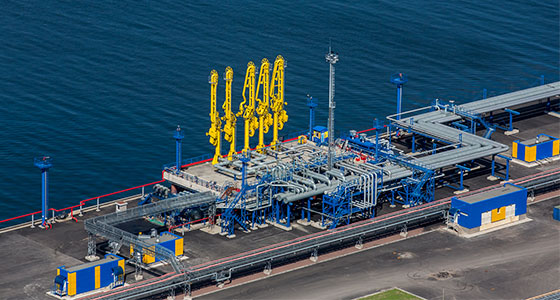

At Ship Provision Ust-luga, we understand the critical role ship chandlers play in the smooth operations of vessels. As experts in the field, we go above and beyond to offer a diverse range of high-quality provisions, spare parts, equipment, and consumables to meet your ship's requirements. Our extensive inventory includes fresh and frozen food items, beverages, cleaning supplies, safety equipment, navigation tools, and much more. We carefully source our products from reliable suppliers to guarantee their quality and freshness, ensuring that your crew receives the best supplies available.
What sets us apart from the competition is our unwavering dedication to exceptional customer service. We pride ourselves on our ability to provide personalized solutions tailored to your vessel's unique specifications. Our experienced team works closely with shipowners, captains, and crew members to understand their specific needs and preferences. Whether you require custom food packages, specialized spare parts, or urgent provisions, we are here to accommodate your requests promptly and efficiently.
Ship Provision Ust-luga operates from the strategic location of Ust-Luga, one of Russia's largest and busiest ports. This advantageous position enables us to efficiently serve ships navigating through the Baltic Sea, ensuring timely and reliable deliveries. Our strong network of suppliers, both locally and internationally, allows us to source high-quality products at competitive prices, giving you the best value for your investment.
When partnering with Ship Provision Ust-luga, you can expect professionalism, reliability, and a commitment to sustainability. We prioritize environmentally friendly practices and strive to reduce our ecological footprint. Our packaging materials are recyclable, and we actively seek out suppliers who share our dedication to sustainability.
In addition to our ship chandler services, we also offer a range of ancillary solutions to enhance your overall experience. These include customs clearance assistance, logistics coordination, and support for vessel repairs and maintenance. Our goal is to be your all-in-one supply partner, simplifying your provisioning process and allowing you to focus on your core operations.
At Ship Provision Ust-luga, we understand that the maritime industry operates around the clock. That's why our team is available 24/7 to handle your inquiries, process orders, and address any concerns that may arise. We pride ourselves on our prompt and reliable service, ensuring that your vessel's supply needs are met without delay.
Experience the Ship Provision Ust-luga difference and discover a ship chandler that is committed to exceeding your expectations. Contact us today to discuss your provisioning requirements and let us tailor a comprehensive supply solution to suit your ship's needs. Trust Ship Provision Ust-luga for unmatched service, quality provisions, and a seamless supply experience.